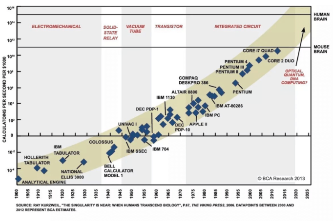

Introduction
Session 01
Álvaro Canalejo-Molero
Introduction
About me
Postdoctoral researcher at the project DIGIPOL
PhD in Political and Social Sciences from the EUI
Interested in political behaviour, comparative politics, democratic attitudes and preferences, quantitative methods
Originally from the city with the most UNESCO heritage sites in the world
You can find more information about me in my personal website
What about you?
Name
Background
Why did you take the course?
What is this course about?
An era of data and computation

An era of data and computation
Is it enough with collecting data and having the power to analyze it?
No! Science is all about design!
The goal is to make inferences about the world on the basis of empirical information
To make the right inferences, methods and rules are crucial
This course is about these rules and methods, and how to apply them, with a focus on quantitative research
In what topics are you interested?
Learning outcomes
…understand the logic of quantitative social science.
…understand and critically assess quantitative research articles.
…identify an appropriate and feasible research design for a given research problem.
…communicate complex concepts effectively to a broad audience.
…perform simple descriptive and inferential statistical analyses.
The course organization
Teaching policy
This is a seminar, not a lecture!
Therefore, active participation is the most important tool:
No slides
Comments and doubts about the readings to be brought in advance
Readings questions every week
At least one presentation by student
Integration and interaction policy
No discrimination
Inclusive language
No bullying
Everyone should participate in equal terms
Artificial intelligence (AI) policy
AI tools, like ChatGPT, are allowed
They should augment, not replace, human work
Mandatory declaration policy
Evaluation I
Attend all the sessions
Study the mandatory readings before each session
- Focus on the basic readings
Participate actively
Answer the reading questions of each session
Specific folder in OLAT
To be uploaded the day before the class
Evaluation II
Presentation of the supplementary readings
Organization at the end of this class
It should have: an introduction, researh design review, and research design proposal (more in the syllabus)
Complete three take-home exercises
Second half of the course (from October 31st)
Empirical applications (perform statistical analyses with real data using R)

Masterseminar paper
Between 7000 and 9000 words
Topic to be agreed with the lecturer
Paper outline of 1-2 by December 1st 2024
Introduction of the topic
Research question
Academic and societal relevance
Theory and hypotheses
Approach and structure of the paper
Office and tutor hours
No office hours; send an email to the lecturer (alvaro.canalejo@unilu.ch) to schedule a meeting one week in advance.
Tutor for quick doubts and questions. Also, “tutorial classes” to help completing the take-home exercises on Tuesdays from 16:00 to 17:30 starting on November 5th (Hörsaal HS 2).
Name: Sara Ndiaye
E-mail address: sara.ndiaye@stud.unilu.ch
Resources
AJ: Angrist, J. D. (2014). Mastering’ metrics: The path from cause to effect. Princeton University Press.
BCH: Blair, G., Coppock, A., & Humphreys, M. (2023). Research design in the social sciences: declaration, diagnosis, and redesign. Princeton University Press.
BF: Bueno de Mesquita, E. and Fowler A. (2021). Thinking Clearly with Data: A Guide to Quantitative Reasoning and Analysis. Princeton University Press.
GG: Gerber, A. S., & Green, D. P. (2012). Field experiments: Design, analysis, and interpretation. (No Title).
KKV: King, G., Keohane, R.O., and S. Verba (1994). Designing Social Inquiry. Princeton: Princeton University Press.
KW: Kellstedt, P. M., and Whitten, G.D. (2013). The Fundamentals of Political Science Research. Third Edition. Cambridge: Cambridge University Press.
Additionally…
Finally, supplementary readings in OLAT.
Schedule I
Session 1. Introduction (19.09.24 / 14:15–16:00)
Session 2. The logic of scientific research (19.09.24 / 16:15–18:00)
Session 3. Theory and research design (03.10.24 / 14:15–16:00)
Session 4. Data and measurement (03.10.24 / 16:15–18:00)
Schedule II
Session 5. Descriptive inference (17.10.24 / 14:15–16:00)
Session 6. Causal inference (17.10.24 / 14:15–16:00)
Session 7. Predictive inference (31.10.24 / 16:15–18:00)
Session 8. Experimental studies (31.10.24 / 16:15–18:00)
- Publication take-home exercise I
Schedule III
Session 9. Large-N observational studies (14.11.24 / 14:15–16:00)
Session 10. Small-N observational studies (14.11.24 / 16:15–18:00)
Deadline take-home exercise I
Publication take-home exercise II
Schedule IV
Session 11. Statistical testing (28.11.24 / 14:15–16:00)
Session 12. Introduction to regression I (28.11.24 / 16:15–18:00)
Deadline take-home exercise II
Publication take-home exercise III
Session 13. Introduction to regression II (12.12.24 / 14:15–16:00)
Session 14. Conclusion (12.12.24 / 16:15–18:00)
- Deadline take-home exercise III
Conclusion

Let’s organize the presentations! 🙂
Masterseminar - Fall Term 2024